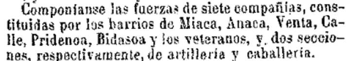
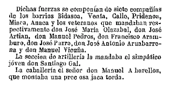
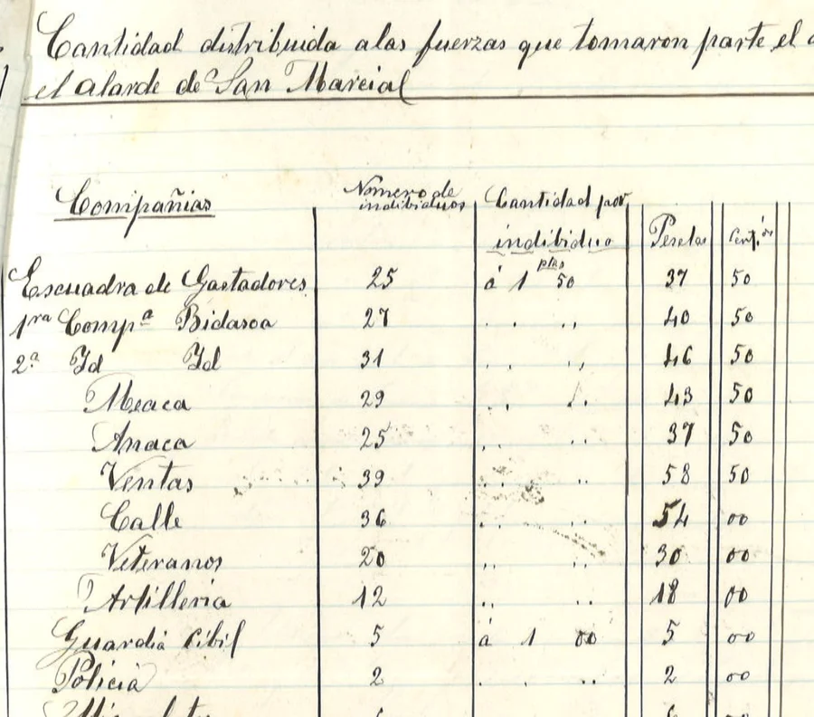

Compañía histórica
Historia de la compañía
En la crónica de La Libertad de 1889 aparecía un nombre que inicialmente se había leído con cautela como Pridenea.
Un segundo recorte, procedente de El Guipuzcoano del 1 de julio de 1889, permite corregir la lectura a Pridenoa. La mención forma parte de una relación de siete compañías de los barrios Bidasoa, Venta, Calle, Pridenoa, Miaca, Anaca y Veteranos.


El Archivo Municipal de Irun no ha localizado referencia independiente a esa compañía en las cuentas municipales correspondientes al periodo, concretamente en el expediente C-2-127 sobre cantidades libradas a participantes en el Alarde.
La misma respuesta del Archivo plantea que podría tratarse de Bidasoa, que figura con dos compañías entre 1887 y 1896, salvo en 1888, año en que se distingue una de Bidasoa y otra de Behobia tras la separación de Behobia del barrio de Bidasoa acordada en junio de 1887.

Fuentes
- “En Irun”, La Libertad, San Sebastián, 1 de julio de 1889, p. 3.
- Recorte de El Guipuzcoano, San Sebastián, 1 de julio de 1889, aportado por el usuario.
- Respuesta del Archivo Municipal de Irun al usuario sobre la posible compañía Pridenoa y el expediente C-2-127.